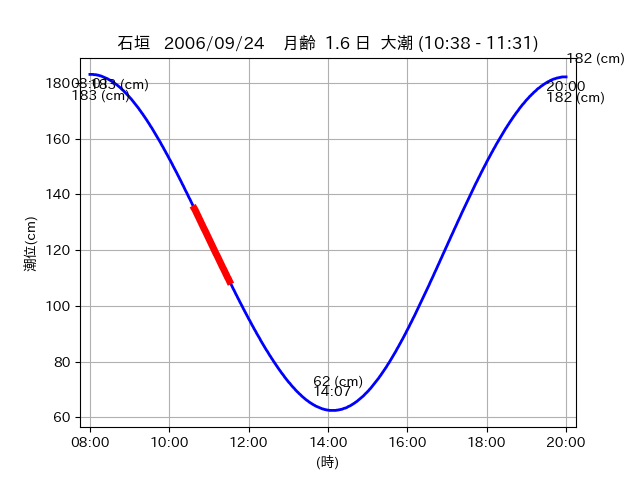

<!DOCTYPE html>
<html>
<head>
    
    <meta http-equiv="content-type" content="text/html; charset=UTF-8" />
    
        <script>
            L_NO_TOUCH = false;
            L_DISABLE_3D = false;
        </script>
    
    <style>html, body {width: 100%;height: 100%;margin: 0;padding: 0;}</style>
    <style>#map {position:absolute;top:0;bottom:0;right:0;left:0;}</style>
    <script src="https://cdn.jsdelivr.net/npm/leaflet@1.9.3/dist/leaflet.js"></script>
    <script src="https://code.jquery.com/jquery-3.7.1.min.js"></script>
    <script src="https://cdn.jsdelivr.net/npm/bootstrap@5.2.2/dist/js/bootstrap.bundle.min.js"></script>
    <script src="https://cdnjs.cloudflare.com/ajax/libs/Leaflet.awesome-markers/2.0.2/leaflet.awesome-markers.js"></script>
    <link rel="stylesheet" href="https://cdn.jsdelivr.net/npm/leaflet@1.9.3/dist/leaflet.css"/>
    <link rel="stylesheet" href="https://cdn.jsdelivr.net/npm/bootstrap@5.2.2/dist/css/bootstrap.min.css"/>
    <link rel="stylesheet" href="https://netdna.bootstrapcdn.com/bootstrap/3.0.0/css/bootstrap-glyphicons.css"/>
    <link rel="stylesheet" href="https://cdn.jsdelivr.net/npm/@fortawesome/fontawesome-free@6.2.0/css/all.min.css"/>
    <link rel="stylesheet" href="https://cdnjs.cloudflare.com/ajax/libs/Leaflet.awesome-markers/2.0.2/leaflet.awesome-markers.css"/>
    <link rel="stylesheet" href="https://cdn.jsdelivr.net/gh/python-visualization/folium/folium/templates/leaflet.awesome.rotate.min.css"/>
    
            <meta name="viewport" content="width=device-width,
                initial-scale=1.0, maximum-scale=1.0, user-scalable=no" />
            <style>
                #map_613ea08412fd2d77137070dafdc7e98d {
                    position: relative;
                    width: 2048.0px;
                    height: 1600.0px;
                    left: 0.0%;
                    top: 0.0%;
                }
                .leaflet-container { font-size: 1rem; }
            </style>
        
</head>
<body>
    
    
            <div class="folium-map" id="map_613ea08412fd2d77137070dafdc7e98d" ></div>
        
</body>
<script>
    
    
            var map_613ea08412fd2d77137070dafdc7e98d = L.map(
                "map_613ea08412fd2d77137070dafdc7e98d",
                {
                    center: [24.28, 123.697],
                    crs: L.CRS.EPSG3857,
                    ...{
  "zoom": 12,
  "zoomControl": true,
  "preferCanvas": false,
}

                }
            );

            

        
    
            var tile_layer_8cfb0e5ad9286f0f53376a92e9f14928 = L.tileLayer(
                "https://cyberjapandata.gsi.go.jp/xyz/seamlessphoto/{z}/{x}/{y}.jpg",
                {
  "minZoom": 0,
  "maxZoom": 18,
  "maxNativeZoom": 18,
  "noWrap": false,
  "attribution": "\u5730\u7406\u9662\u5730\u56f3",
  "subdomains": "abc",
  "detectRetina": false,
  "tms": false,
  "opacity": 1,
}

            );
        
    
            tile_layer_8cfb0e5ad9286f0f53376a92e9f14928.addTo(map_613ea08412fd2d77137070dafdc7e98d);
        
    
            var marker_21967b363bef47dd2fa51da22b28fea7 = L.marker(
                [24.2789, 123.7515],
                {
}
            ).addTo(map_613ea08412fd2d77137070dafdc7e98d);
        
    
            var icon_d5690ba14a8fc652522ba3ee7e49cf46 = L.AwesomeMarkers.icon(
                {
  "markerColor": "blue",
  "iconColor": "white",
  "icon": "info-sign",
  "prefix": "glyphicon",
  "extraClasses": "fa-rotate-0",
}
            );
        
    
        var popup_0e875875eee2346a14f5ec6d4dd437b1 = L.popup({
  "maxWidth": "100%",
});

        
            
                var html_1b23eea50c1dc9b5ec7057b162950ecd = $(`<div id="html_1b23eea50c1dc9b5ec7057b162950ecd" style="width: 100.0%; height: 100.0%;"><table><tr><td></td></tr><tr><td><center>20060924 No.1 </center></table></td></tr></table</div>`)[0];
                popup_0e875875eee2346a14f5ec6d4dd437b1.setContent(html_1b23eea50c1dc9b5ec7057b162950ecd);
            
        

        marker_21967b363bef47dd2fa51da22b28fea7.bindPopup(popup_0e875875eee2346a14f5ec6d4dd437b1)
        ;

        
    
    
                marker_21967b363bef47dd2fa51da22b28fea7.setIcon(icon_d5690ba14a8fc652522ba3ee7e49cf46);
            
    
            var marker_5ae8433a02442d5174863c81371a874c = L.marker(
                [24.2814, 123.6976],
                {
}
            ).addTo(map_613ea08412fd2d77137070dafdc7e98d);
        
    
            var icon_88fd4e7b598d12d3ebe2665b39173023 = L.AwesomeMarkers.icon(
                {
  "markerColor": "orange",
  "iconColor": "white",
  "icon": "info-sign",
  "prefix": "glyphicon",
  "extraClasses": "fa-rotate-0",
}
            );
        
    
        var popup_eaa73ff31610a6ea319bc419565acc99 = L.popup({
  "maxWidth": "100%",
});

        
            
                var html_ecbb34753665267b58e649311c1f7a08 = $(`<div id="html_ecbb34753665267b58e649311c1f7a08" style="width: 100.0%; height: 100.0%;"><table><tr><td></td></tr><tr><td><center>20060924 No.2 </center></table></td></tr></table</div>`)[0];
                popup_eaa73ff31610a6ea319bc419565acc99.setContent(html_ecbb34753665267b58e649311c1f7a08);
            
        

        marker_5ae8433a02442d5174863c81371a874c.bindPopup(popup_eaa73ff31610a6ea319bc419565acc99)
        ;

        
    
    
                marker_5ae8433a02442d5174863c81371a874c.setIcon(icon_88fd4e7b598d12d3ebe2665b39173023);
            
    
            var poly_line_0802159132e8441035448552546146d3 = L.polyline(
                [[24.2814, 123.6976], [24.2788, 123.6883]],
                {"bubblingMouseEvents": true, "color": "#00FFFF", "dashArray": null, "dashOffset": null, "fill": false, "fillColor": "#00FFFF", "fillOpacity": 0.2, "fillRule": "evenodd", "lineCap": "round", "lineJoin": "round", "noClip": false, "opacity": 1.0, "smoothFactor": 1.0, "stroke": true, "weight": 3}
            ).addTo(map_613ea08412fd2d77137070dafdc7e98d);
        
    
            var marker_63bb46d5e2a068a80b9aad89bd729271 = L.marker(
                [24.2801, 123.6973],
                {
}
            ).addTo(map_613ea08412fd2d77137070dafdc7e98d);
        
    
            var icon_3c3ffd320f947d35168e1e0375677cad = L.AwesomeMarkers.icon(
                {
  "markerColor": "blue",
  "iconColor": "white",
  "icon": "info-sign",
  "prefix": "glyphicon",
  "extraClasses": "fa-rotate-0",
}
            );
        
    
        var popup_f354d7fbe4c8a988384f6d5d5422e98f = L.popup({
  "maxWidth": "100%",
});

        
            
                var html_40c3c365ac893784aceecb9bb0b4f7f6 = $(`<div id="html_40c3c365ac893784aceecb9bb0b4f7f6" style="width: 100.0%; height: 100.0%;"><table><tr><td></td></tr><tr><td><center>20060924 No.3 </center></table></td></tr></table</div>`)[0];
                popup_f354d7fbe4c8a988384f6d5d5422e98f.setContent(html_40c3c365ac893784aceecb9bb0b4f7f6);
            
        

        marker_63bb46d5e2a068a80b9aad89bd729271.bindPopup(popup_f354d7fbe4c8a988384f6d5d5422e98f)
        ;

        
    
    
                marker_63bb46d5e2a068a80b9aad89bd729271.setIcon(icon_3c3ffd320f947d35168e1e0375677cad);
            
</script>
</html>